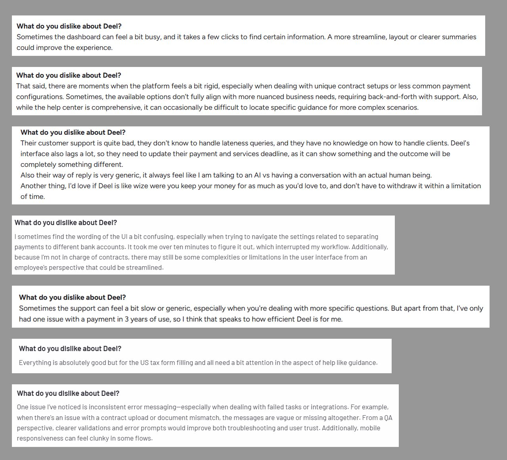
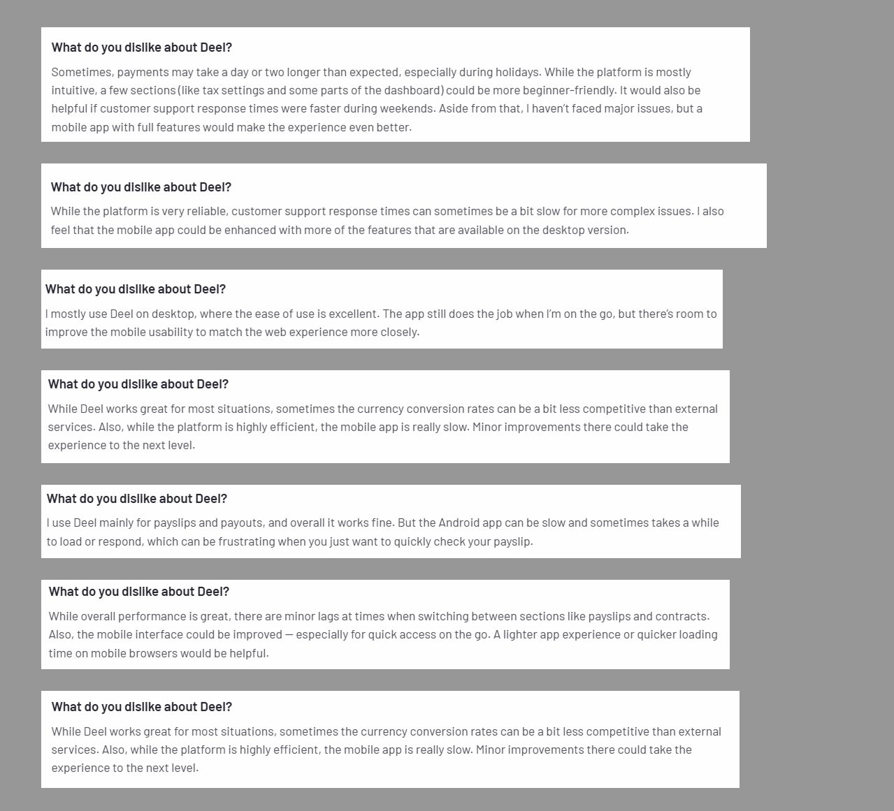
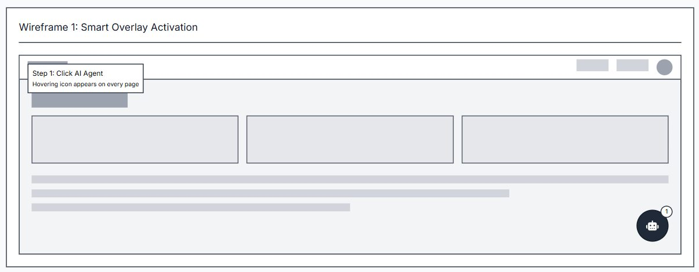
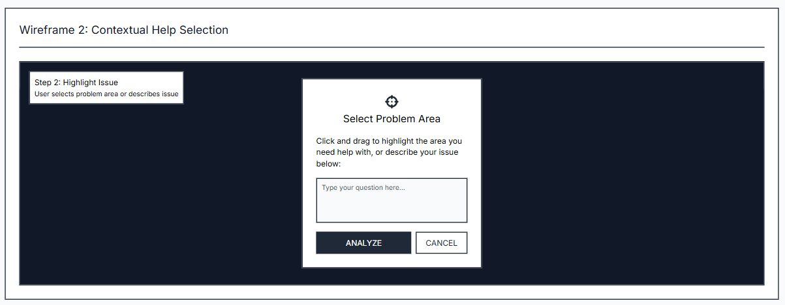
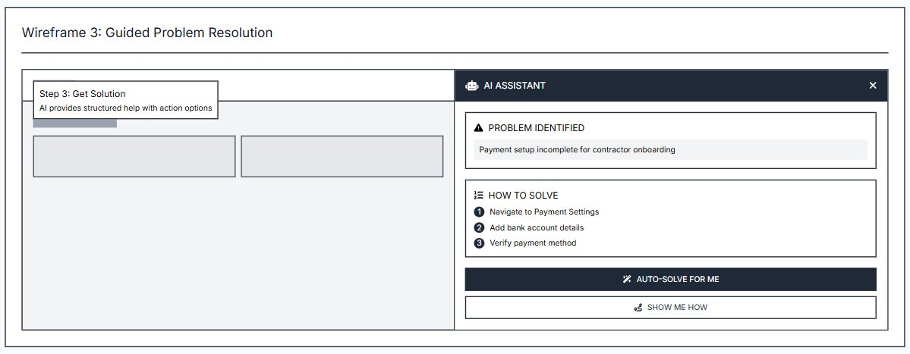
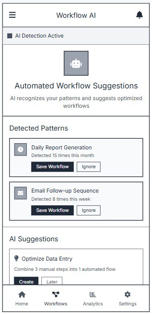
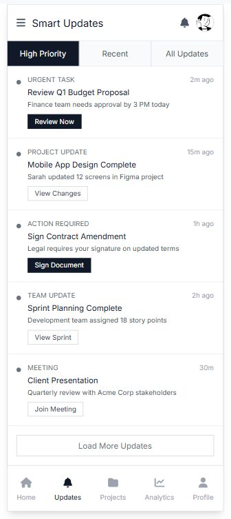

Why "they already have AI" is the wrong objection
Deel ships Deel AI — an assistant that answers compliance, workflow and reporting questions. The tempting read is that the AI slot is filled. It isn't, because the two things solve different problems: an assistant answers questions a user knows how to ask, and the expensive failures happen when they don't.
So rather than proposing a better assistant, I went looking for where users are stuck in a way a chat box can't reach — which meant starting from evidence rather than from the product surface.
The gaps, from public evidence
I pulled user reviews from G2 rather than reasoning from the feature list. Two themes were consistent enough to build on, and both are the kind of problem an orchestration layer is actually suited to — they're about navigating a workflow, not about retrieving a fact.
Gap 1 — no embedded, real-time guidance
Users struggle to resolve complex or unfamiliar issues inside the platform, particularly in intricate workflows. The available options are static help centres, delayed support, or generic AI answers. The result is slower onboarding, more errors, and a higher ticket volume — all of which cost Deel money on the support side while costing the user their afternoon.

Gap 2 — incomplete mobile parity
Users run critical HR and payroll tasks from phones, and hit an app that lacks the desktop's functionality, speed and usability. Missing features, slow performance, clunky navigation — most painful exactly when someone is travelling and the task is urgent.

Solution 1 — a contextual in-platform overlay agent
An overlay that sits above Deel's UI, detects workflow context, and gives step-by-step guidance at the moment someone stalls. The interaction that makes it work is deliberately spatial rather than conversational: you don't describe your problem, you point at it. The agent reads the highlighted region the way you'd hand someone a screenshot.
It then returns a structured answer rather than prose — what the problem is, how to solve it, whether Deel can do this at all, whether the agent may do it for you, a DIY workaround, and the option to file it as a feature request. That last branch matters: "the product cannot do this" is a valid answer, and a support agent that can't say it wastes the user's time to protect the product's feelings.



Reduction in user support tickets — with fewer tickets, faster resolution and higher immediate satisfaction as the supporting set. Chosen because it is the one number where the user's benefit and Deel's cost saving are the same event, which makes it very hard to game.
Solution 2 — Companion Mode on mobile
Rather than rebuilding the mobile app to parity — expensive, slow, and someone else's roadmap — Companion Mode uses orchestrator agents to close the gap behaviourally. It syncs desktop context so a task can be handed off mid-flight, watches recurring work (monthly payroll, leave approvals) and turns it into runnable "recipes", and surfaces a prioritised feed of what's pending with one-tap execution.
The insight is that mobile parity was never really about features. It's about what a user can finish in ninety seconds while standing in an airport, and that's a sequencing problem an agent can solve without shipping every desktop screen.


Percentage reduction in manual effort and time spent on repetitive tasks, measured in Mixpanel as time-to-complete for recurring workflows before and after the agent. A time delta, not an engagement metric — because on mobile, more time in the app is a symptom, not a win.
Validation and rollout
Both solutions carry the same shape of plan, because the risk is the same shape: an agent acting inside someone's payroll system is a trust problem before it is a technical one.
- Validate with user interviews and journey mapping, then interactive prototypes for the core scenarios under targeted usability testing.
- Launch to a small pilot group first, watching engagement and task completion, with in-app feedback and KPIs — overlay activations, ticket deflections, task resolution time.
- Expand incrementally rather than by date.
The three risks I named — workflow and data integration, end-user adoption and trust, and privacy and security — map to three mitigations: co-build the integration with Deel from day one, ship in-app onboarding with transparent opt-in permissions, and comply with enterprise security mandates with regular access audits. Opt-in is the load-bearing one. An agent that can act on your behalf without an explicit grant is not a feature, it's an incident waiting to be written up.
What I'd take into a team
- Start from evidence you didn't generate. The gaps came from public reviews, so the argument doesn't depend on my taste. That's also what makes it usable in a sales conversation.
- "They already have AI" describes the surface, not the job. An assistant serves users who know what to ask; the money is in the ones who don't.
- Pick a north star where the user's win and the company's win are the same event. Ticket deflection and time-to-complete both pass that test. Engagement doesn't.
- Let the product say no. Building "Deel can't currently do this" into the answer structure is a small decision that buys a lot of trust.